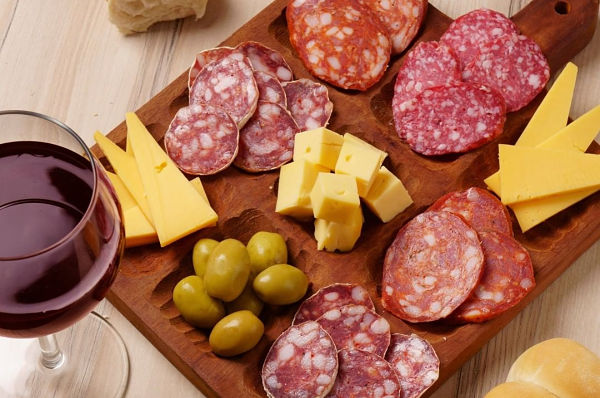
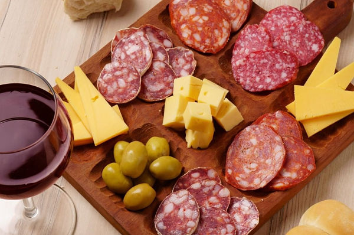

Sobre mí
Hola, soy Sofia Alcaraz, tengo 25 años y estoy cursando el segundo año de la Tecnicatura en Desarrollo de Software en el Instituto 9 de Julio. Me gusta todo lo relacionado al desarrollo web y aprender nuevas herramientas que me ayuden a crear sitios lindos, prácticos y fáciles de usar.
Actualmente trabajo mientras estudio, lo que me ha ayudado a desarrollar habilidades de organización, responsabilidad y aprendizaje continuo. Fuera del ámbito académico y laboral, disfruto de la gastronomía y compartir buenos momentos con mis amigas, ya que creo que el equilibrio personal también impulsa el crecimiento profesional.
¡Mis cosas favoritas!

 

Proyectos
Juego Educativo de Fracciones
Desarrollé un juego en Python para enseñar fracciones a estudiantes. Incluye niveles, teoría y práctica interactiva.
Ver más